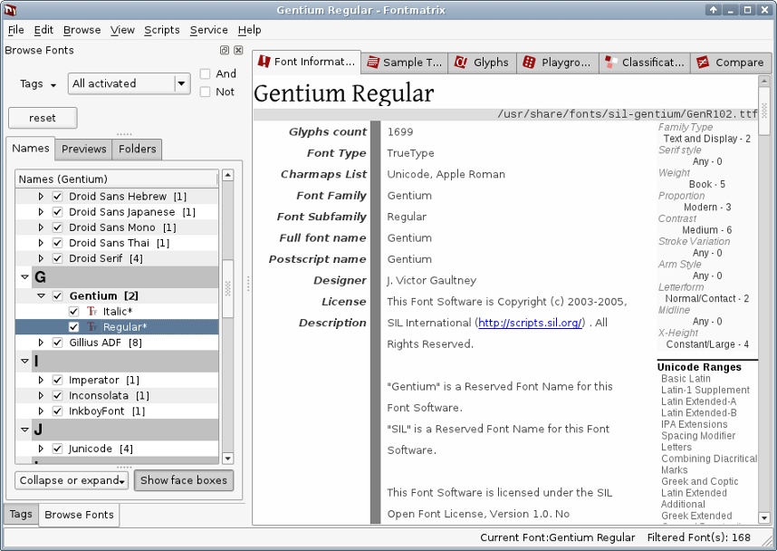

Coloro che provengono da MacOSX o anche da una versione più vecchia di MacOS, possono sentire la mancanza di un buon strumento grafico per la gestione dei caratteri. Ecco dunque Fontmatrix. È un programma giovane, ma ha tutti gli strumenti essenziali per gestire i tipi di carattere, sia singolarmente, sia in gruppi per mezzo di “etichette”. Fontmatrix è anche in grado di visualizzare i tipi di carattere in un testo di esempio, e di farlo in dimensioni variabili; e può visualizzare anche singoli glifi. Ancora meglio, Fontmatrix ha un ottime capacità di gestire i caratteri OpenType, e in futuro saranno ulteriormente migliorate.
Fontmatrix non attiva i caratteri “al volo” per le applicazioni già aperte, ma può attivare e disattivare caratteri velocemente senza interferire con i caratteri di sistema, che devono essere sempre utilizzabili da tutte le applicazioni. Quindi, per lavorare con Scribus o altre applicazioni di grafica, basta visualizzare e attivare i tipi di carattere che vi servono, e riavviare l'applicazione interessata. Infine, Fontmatrix può creare dei campionari di caratteri, che sono documenti PDF che mostrano ciascun tipo di carattere.
|  |